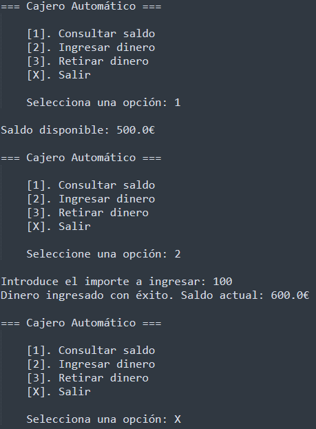

Simulación de Cajero Automático
Vamos a simular un cajero automático con manejo de excepciones personalizadas, permitiendo realizar depósitos, retiros y consultar saldo.
1. Crea una clase CuentaBancaria con:
- Un atributo saldo privado.
- Métodos para ingresar dinero, retirar dinero y consultar saldo.
- Maneja una excepción SaldoInsuficienteException si se intenta retirar más de lo disponible.
- Maneja una excepción LimiteDiarioException si se intenta retirar más de 600€.
- Maneja una excepción DepositoMaximoException si se intenta ingresar más de 3.000€.
- Para realizar cualquier operación, se debe controlar que el importe sea mayor que 0.
2. Crea un programa principal que permita al usuario interactuar con el cajero usando un menú.
